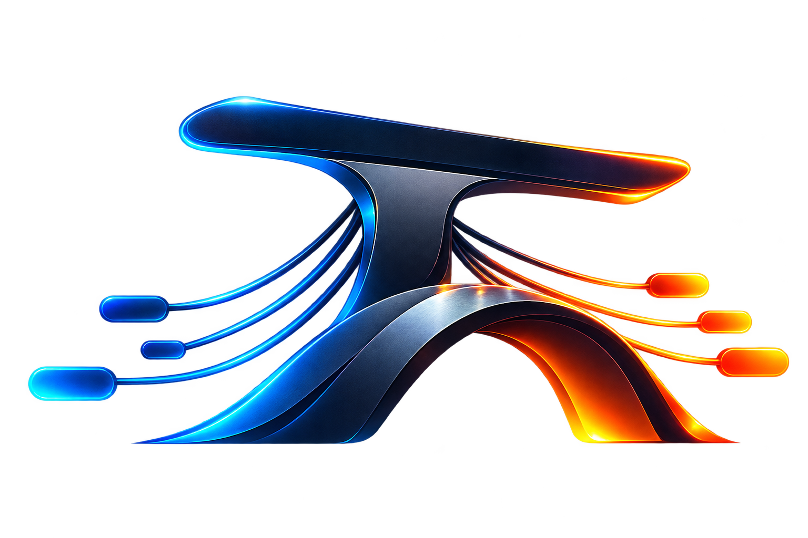

Site visit
Verify storm damage before payout
Insurance · Sentinel Mutual
Smart casual, closed-toe shoes — site PPE required
TB-2026-00417
OPEN

TASK BRIDGEConcept demo — not a live platform
Task Bridge is an open-source concept for routing AI-generated human-in-the-loop work back to real people — with the claim-locking, turnaround windows, and accountability of a bug bounty platform, and verification that can't be self-certified.
Lifecycle
Every request moves through the same chain of custody, whether it started with an AI system or a customer asking a company directly for help.
AI or a customer flags something needing a human — never published on its own.
An Approver signs off, edits guidance if needed, and a verification code is issued.
First qualified resolver locks it. No one else can take it while it's held.
Completion requires the client's code — never the resolver's own say-so.
Admin releases payout — a separate authority from whoever approved the job.
Mock job board
Sample listings only — no real organizations, no real payouts. This is what the public board looks like once requests clear approval.
Insurance · Sentinel Mutual
Smart casual, closed-toe shoes — site PPE required
Bank · Meridian Bank
Business casual — branch-adjacent visit
Logistics · Swift Line Logistics
Casual — no client interaction expected
Law firm · Halsted & Cole Attorneys
Remote — desk-based, no site visit
Accounting · Ledger & Co.
Casual — brief client interaction possible
Retail · Northfield Goods
Not specified — confirm with requester before accepting
Filter chips are for layout only in this preview — no live filtering yet. That's a good first issue if you want to help build it.
Who's who
Every approval, rejection, and payout checks the caller's actual role for that specific request's organization — not just whether they're signed in.
Oversees everything for their organization — every request regardless of status, who's allowed to approve, and who releases payouts. The first Admin is whoever registers the org.
Reviews requests before they go live. Can approve, reject, resolve something personally, or edit the guidance shipped with a job. Can't self-promote to Admin or release a payout.
Claims and does the work. Locked to one job at a time per claim, on the clock, and paid once the client's own verification code confirms it's actually finished.
Help build this
The org trust system, claim locking, verification codes, and payout gating all already work — see the repo. What's missing is everything you're looking at right now, turned into something real: a live board, auth, an actual UI. If this is a problem worth solving, take a piece of it.